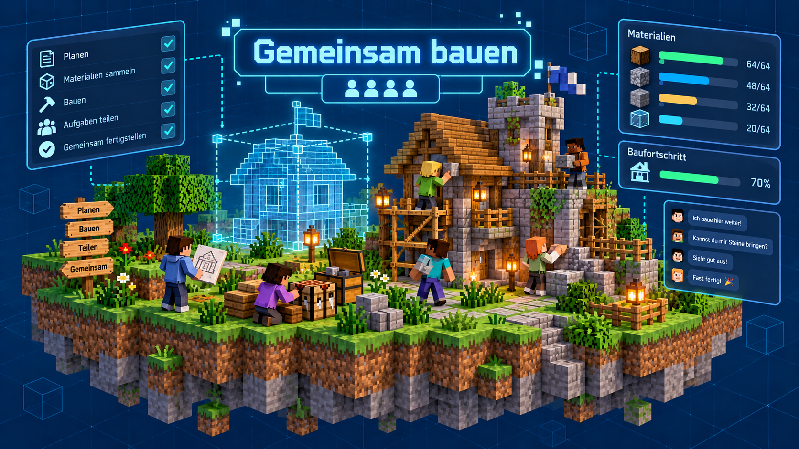

Planen, bauen und weiterentwickeln
Beim gemeinsamen Bauen in Minecraft stehen Ideen, Organisation und Zusammenarbeit im Vordergrund. Viele Projekte entstehen nicht spontan, sondern durch gemeinsame Planung, gemeinsame Entscheidungen und das Aufteilen von Aufgaben.
In der AG bauen wir nicht nur einzelne Häuser oder kleine Gebäude, sondern oft auch ganze komplexere Projekte. Dabei lernen wir, wie man eine Idee von der ersten Skizze bis zur fertigen Konstruktion entwickelt. Das betrifft zum Beispiel Häuser, Werkstätten, Brücken, Stadtbereiche, Technikgebäude oder besondere Spielräume.

Typische Bauaufgaben
- Planung von Gebäuden oder ganzen Siedlungen
- Aufteilung von Bauabschnitten und Aufgaben
- Materialsammlung und Ressourcenmanagement
- Architektur und Gestaltung von Innenräumen
- Verbesserung und Erweiterung bestehender Projekte
Was wir dabei üben
Gemeinsames Bauen bedeutet auch, praktische Fähigkeiten zu trainieren:
- Konzeption und Skizzieren eigener Ideen
- Zusammenarbeit im Team und Abstimmung bei Entscheidungen
- Fehler erkennen und Korrekturen anpassen
- Projekte nach und nach erweitern und optimieren
- Gestalterische und funktionale Aspekte berücksichtigen